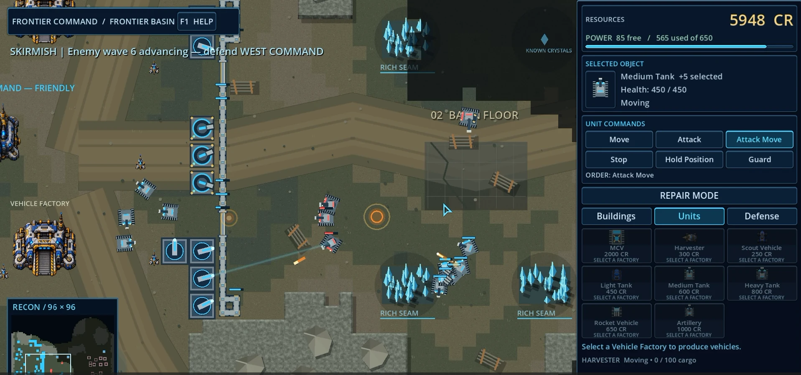
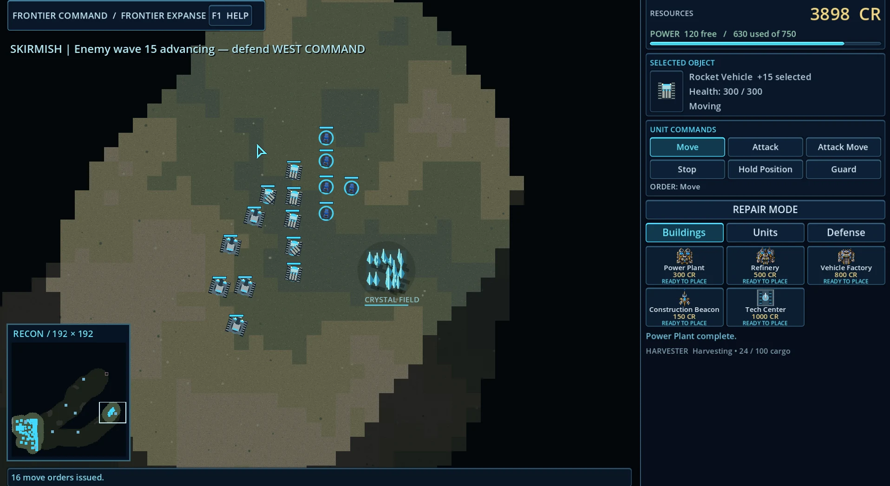
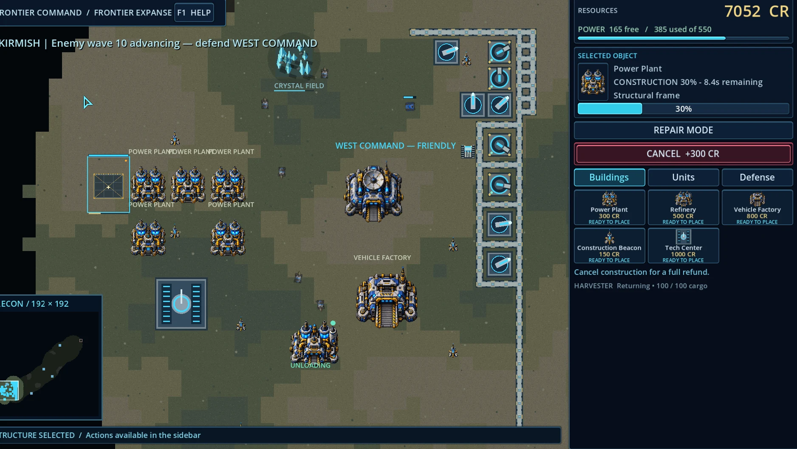
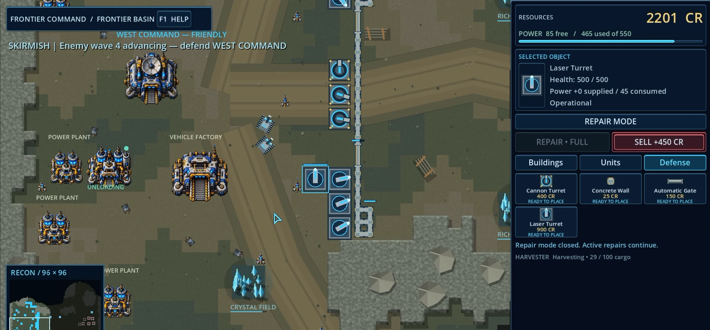
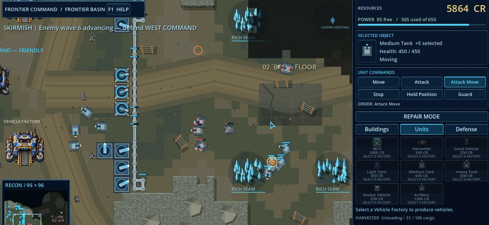
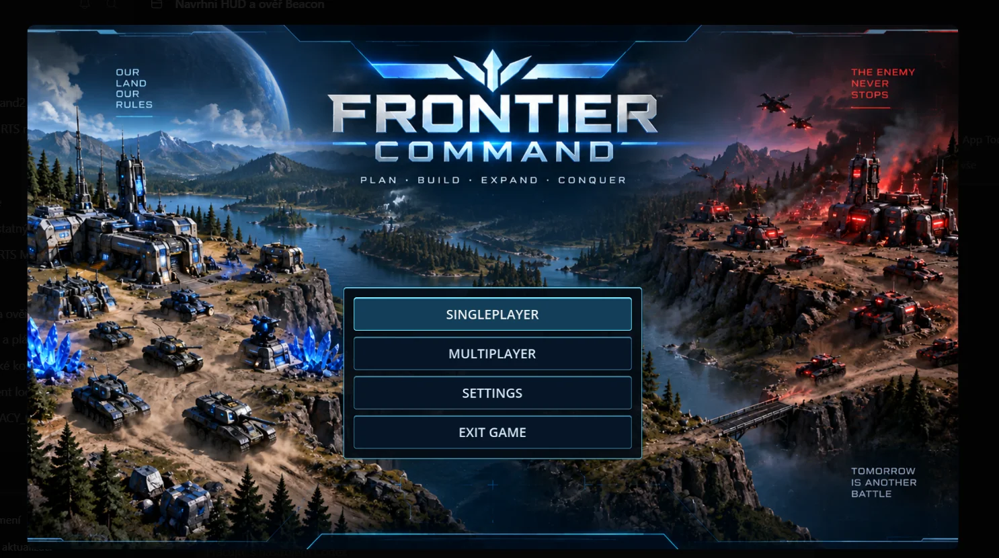
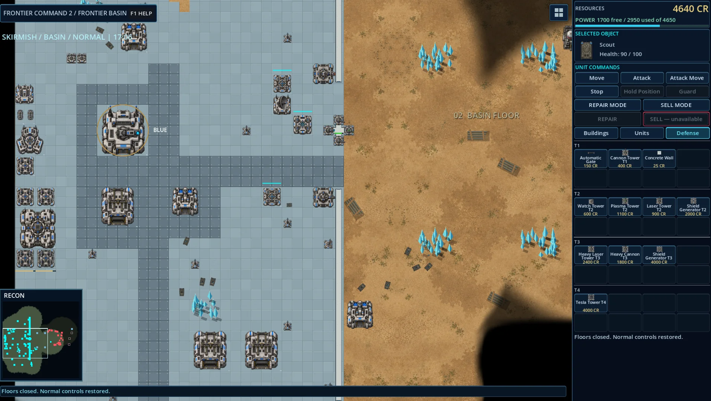
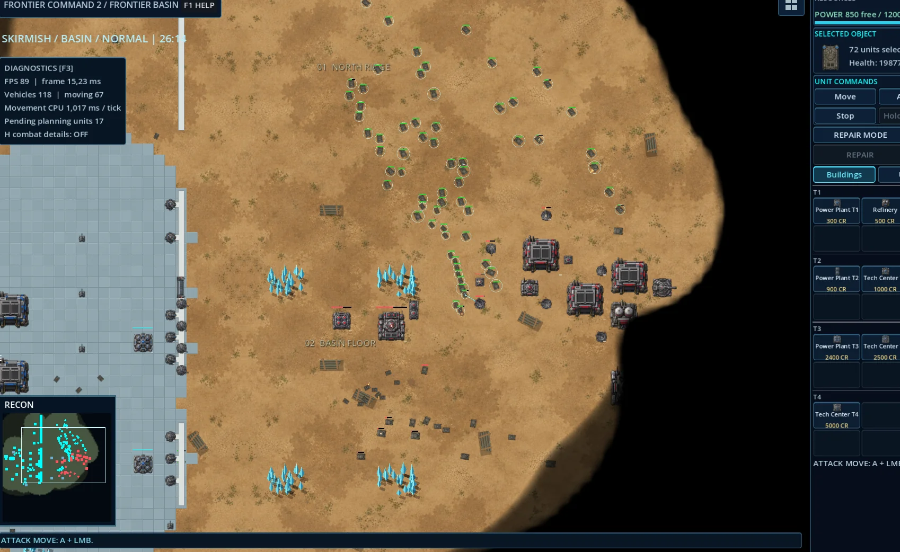
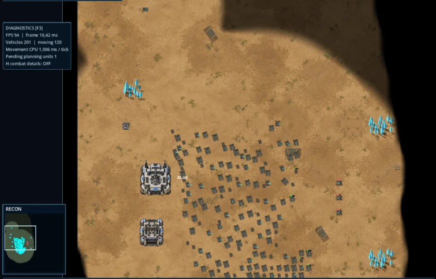

BUILD & EXPAND
Build and expand your command base using structures, construction coverage and forward construction infrastructure.

BUILD. EXPAND. COMMAND.
Frontier Command is a 2D real-time strategy game focused on base building, resource management, technological progression and large-scale vehicle combat.
Windows x64 · Private access for approved testers
03 / DEVELOPMENT LOG
See how Frontier Command evolved from a simple prototype into the current playable Alpha.

Frontier Command – From Prototype to Alpha | Development Progress Watch on YouTube
01 / THE BATTLEFIELD
Establish your base. Secure your resources. Build a fighting force. Every expansion creates new ground to hold — and new decisions to make.
Build and expand your command base using structures, construction coverage and forward construction infrastructure.
Harvest crystal fields, manage credits, operate refineries and maintain enough power for an expanding base.
Produce and command Scouts, Light Tanks, Medium Tanks, Heavy Tanks, Rocket Vehicles and Artillery. Build an army for the situation.
Protect important infrastructure with concrete walls, automatic gates and defensive turrets. Repair your defenses and hold the line.
Scout unexplored ground. Enemy forces and structures remain hidden outside your current vision, making information part of your strategy.
Advance beyond basic technology with an operational Tech Center. Unlock more powerful vehicles and long-range defensive support.
02 / FIELD REPORTS
Real screenshots from the playable Alpha.
Open any image for a closer look.
Vehicle combat and fortified positions on Frontier Basin.

Construction, power and a working crystal economy.
Mixed vehicles, Rocket Vehicles and scouting on Expanse.

Walls, turrets and maintenance around the starting base.

Medium Tanks and attack orders in the current Alpha.

New Frontier Command main menu artwork and game mode selection.

Base layout, resources and the updated defense construction interface.

A coordinated attack across the Frontier Basin battlefield.

A large formation of vehicles gathered for deployment.
04 / CURRENT DEVELOPMENT
Frontier Command is independently developed and actively evolving. The current public tester version is v0.9.4 Alpha.
Additional units, buildings, technologies, balancing, graphics and other improvements are planned. There is no announced release date.
Currently playable systems
05 / ACCESS THE ALPHA
A Windows test build is currently available to approved testers. The download is password protected. Access credentials are provided privately by the developer.
Download test buildExternal download hosted on Proton Drive.
Download the ZIP archive.
Extract the archive.
Run “Frontier Command.exe”.
This development build is currently unsigned. Windows SmartScreen may display a warning when the game is launched for the first time.
06 / TESTER BRIEFING
The Alpha test helps uncover gameplay bugs, AI problems, pathfinding issues, crashes, balance problems, UI problems and unexpected behavior.
When reporting a problem, record what you were doing, what happened, whether it can be reproduced, and a screenshot if possible.
A dedicated bug-reporting link will be added here when available.